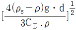
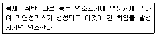
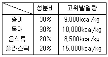
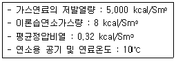
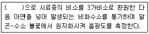
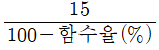
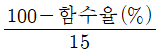
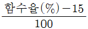
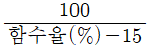
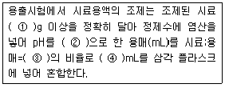

폐기물처리기사 (2007-03-04 기출문제)
1과목: 폐기물 개론
1. 청소상태와 관련된 지표로서 CEI(Community Effect Index)산정시 사용되는 인자와 가장 거리가 먼 것은?
- 가로의 총수
- 가로 청소상태의 만족도
- 가로의 청결상태
- 가로 청소상태의 문제점 여부
(정답률: 알수없음)

2. 항력 계수가 3.5라 가정하고 직경 3cm인 알루미늄 임자를 선별하기 위하여 부유시키는데 필요한 속도는? (단, 공기선별, ρs=2.70, ρ=0.0012이며 속도식 : V=

적용)- 1.24×103cm/s
- 1.59×103cm/s
- 1.78×103cm/s
- 1.92×103cm/s
(정답률: 알수없음)
3. 어느 쓰레기를 압축시켜 용적 감소율이 38%인 경우 압축비는?
- 약 1.61
- 약 1.84
- 약 2.52
- 약 2.76
(정답률: 알수없음)
4. 쓰레기를 파쇄할 때 90% 이상을 3.8cm보다 작게 파쇄하려고 하는 경우, Rosin-Rammler Model에 의한 특성입자의 크기는? (단, n=1)
- 약 1.2cm
- 약 1.7cm
- 약 2.3cm
- 약 2.6cm
(정답률: 알수없음)
5. 취성도가 낮은 쓰레기는 전단파쇄가 유효하다. 취성도를 가장 바르게 나타낸 것은?
- 압축강도와 인장강도의 비로 나타낸다.
- 압축강도와 전단강도의 비로 나타낸다.
- 충격강도와 전단강도의 비로 나타낸다.
- 충격강도와 압축강도의 비로 나타낸다.
(정답률: 알수없음)
6. 다음의 쓰레기 수거형태 중 효율이 가장 좋은 것으로 나타낸 것은? (단, MHT 기준)
- 문전수거
- 타종수거
- 대형 쓰레기통 수거
- 노변수거
(정답률: 알수없음)
7. 자연상태의 쓰레기 밀도가 200kg/m3이었던 것을 정환장에 설치된 압축기에 넣어 압축시킨 결과 800kg/m3으로 증가 하였다. 이 때 부피의 감소율은?
- 75%
- 80%
- 85%
- 90%
(정답률: 알수없음)
8. 어떤 도시에서 한해 동안 폐기물 수거량이 253,000톤/년 이었다. 수거 인부는 1일 850명이었으며, 수거대상 인구는 250,000명이라고 할 때 1인 1일 폐기물 생산량은? (단, 1년 365일 기준)
- 1.12kg/dayㆍ인
- 1.85kg/dayㆍ인
- 15kg/dayㆍ인
- 2.77kg/dayㆍ인
(정답률: 알수없음)
9. 다음 중 관거(pipe line)를 이용하여 쓰레기를 수거할 때 단점이 아닌 것은?
- 가설 후에 경로변경이 곤란하고 설치비가 비싸다.
- 대형 쓰레기는 파쇄ㆍ압축 등의 전처리를 해야 한다.
- 단거리 이송은 경제성 문제로 현실성이 없다.
- 쓰레기 발생밀도가 높은 인구밀집지역 및 아파트 지역 등에서 현실성이 있다.
(정답률: 알수없음)
10. 쓰레기의 발생량 조사법에 대한 설명이다. 다음 중 옳은 것은?
- 적재차량 계수분석은 쓰레기의 밀도 또는 압축정도를 정확히 파악할 수 있는 장점이 있다.
- 직접계근법은 적재차량 계수분석에 비해 작업량은 적지만 정확한 쓰레기 발생량의 파악이 어렵다.
- 물질수지법은 산업폐기물의 발생량 추산시 많이 사용하는 방법이다.
- 쓰레기의 발생량은 각 지역의 규모나 특성에 따라 많은 차이가 있어 주로 총 발생량으로 쵸기한다.
(정답률: 알수없음)
11. 어떤 쓰레기의 가연분의 조성비가 60%이며 수분의 함유율이 20%라면 이 쓰레기의 저위발열량은? (단, 쓰레기 3선분의 조성비 기준의 추정식, Kcal/kg)
- 약 2600
- 약 3200
- 약 3600
- 약 4200
(정답률: 알수없음)
12. 쓰레기 발생량 예측모델 중 모든 인자를 시간에 대한 함수로 나타낸 후 시간에 대한 함수로 표현된 각 영향인자들간의 상관관계를 수식화하는 방법은?
- 다중회귀모델
- 시간인자모델
- 동적모사모델
- 회귀인자모델
(정답률: 알수없음)
13. ‘손선별’에 관한 설명으로 틀린 것은?
- 작업효율은 5~10to/인ㆍ시간 정도이다.
- 9m/min이하의 속도로 이동하는 콘베이어 벨트의 한쪽 또는 양쪽에서 사람이 서서 선별한다.
- 기계적인 선별보다 작업량이 떨어질 수 있다.
- 정확도가 높고 파쇄공정으로 유입되기 전에 폭발가능물질을 분류할 수 있다.
(정답률: 알수없음)
14. 함수율이 90%인 슬러지의 비중이 1.02이었다. 이 슬러지를 진공여과기로 탈수하여 함수율이 60%인 슬러지를 얻었다면 이 슬러지의 비중은? (단, 슬러지내 고형물 비중은 일정함)
- 약 1.09
- 약 1.14
- 약 1.25
- 약 1.31
(정답률: 알수없음)
15. 채취한 쓰레기시료에 대한 분석절차를 가장 바르게 나타낸 것은?
- 밀도측정→분류→건조→물리적조성→전처리
- 밀도측정→물리적조성→건조→분류→전처리
- 전처리→밀도측정→건조→물리적조성→분류
- 전처리→건조→분류→물리적조성→밀도측정
(정답률: 알수없음)
16. 직경이 2m인 트롬멜 스크린의 최적 속도는?
- 약 14rpm
- 약 19rpm
- 약 24rpm
- 약 29rpm
(정답률: 알수없음)
17. 물렁거리는 가벼운 물질로부터 딱딱한 물질을 선별하는데 사용하는 선별분류법은?
- Jigs
- Table
- Secators
- Stoners
(정답률: 알수없음)
18. 폐기물의 수거노선 설정 시 고려해야 할 사항 중 틀린 것은?
- 언덕길은 내려가면서 수거한다.
- 발생량이 적으나 수거빈도가 동일하기를 원하는 곳은 같은날 왕복 내에서 처리한다.
- 아주 많은 양의 쓰레기가 발생되는 발생원은 하루 중 가장 나중에 수거한다.
- 가능한 한 시계방향으로 수거노선을 정하며 U자형 회전은 피하여 수거한다.
(정답률: 알수없음)
19. 도시 폐기물의 입자 크기를 분류하기 위하여 회전식 원통스크린(Trommel)을 많이 이용한다. Trommel 스크린에 대한 설명으로 적절치 못한 것은?
- 원통의 직경 및 길이가 길면 동력 소모가 많고 효율도 떨어진다.
- 원통의 경사도가 크면 효율이 떨어지고 부하율도 커진다.
- 회전속도의 경우 어느정도 까지는 증가할수록 선별효율이 증가하나 그 이상이 되면 원심력에 의해 막힘현상이 일어난다.
- 임계회전속도와 최적회전속도와의 관계는 경험적으로 [임계회전속도×0.45=최적회전속도]로 나타낼 수 있다.
(정답률: 알수없음)
20. 산소성분(O) 전부가 수소성분(H)과 결합하여 수분(H2O)으로 존재한다고 가정하고 발열량을 산정하는 식은? (단, 원소분석에 의한 방법)
- Steuer의 식
- Dulong의 식
- Scheure의 식
- Kestner의 식
(정답률: 알수없음)
2과목: 폐기물 처리 기술
21. 매립지 기체 발생단계를 4단계로 나눌 때 매립초기의 호기성 단계(혐기성 전단계)에 대한 설명으로 틀린 것은?
- 폐기물내 수분이 많은 경우에는 반응이 가속화된다.
- O2가 대부분 소모된다.
- N2가 급격히 발생한다.
- 주요 생성기체는 CO2이다.
(정답률: 알수없음)
22. 폐기물 고화처리에 주로 사용되는 보통포틀랜드 시멘트의 주성분을 옳게 나열한 것은?
- Al23O3 65%, MgO 22%
- MgO 65%, Al2O3 22%
- SiO2 65%, CaO 22%
- CaO 65%, SiO 22%
(정답률: 알수없음)
23. 침출수 처리를 위한 Fenton 산화법의 공정 구성 순서로 가장 알맞은 것은?
- pH 조정조→급속교반조→중화조→완속교반조→침전조
- 급속교반조→중화조→완속교반조→pH 조정조→침전조
- 중화조→pH 조정조→급속교반조→완속교반조→침전조
- 급속교반조→완속교반조→pH 조정조→중화조→침전조
(정답률: 알수없음)
24. 화학구조에 따른 활성탄의 흡착정도에 대한 설명으로 옳지 않은 것은?
- 수산기가 있으면 흡착율이 낮아진다.
- 불포화 유기물이 포화 유기물보다 흡착이 잘 된다.
- 방향족의 고리수가 증가하면 일반적으로 흡착율이 증가한다.
- 할로겐족이 포함되어 있으면 일반적으로 흡착율이 감소한다.
(정답률: 알수없음)
25. 매립공법 중 압축매립공법(Baling System)에 관한 설명으로 틀린 것은?
- 쓰레기를 매립 후 다짐기계를 이용하여 일정한 압축을 실시한다.
- 쓰레기의 운반이 쉽다.
- 지가(地價)가 비쌀 경우에 유효한 방법이다.
- 층별로 정렬하는 것이 보편적이며 매립 각 층별로 일일복토를 실시하여야 한다.
(정답률: 알수없음)
26. 슬러지내 비중 0.96인 휘발성 고형물이 7%, 비중 1.85인 나머지 잔류 고형물의 함량이 14%일 때 슬러지의 비중은? (단, 총고형물 함량은 21%)
- 1.07
- 1.12
- 1.17
- 1.19
(정답률: 알수없음)
27. 인구가 200,000명인 어느 도시의 쓰레기배출 원단위가 1.2kg/인ㆍ일 이고, 밀도는 0.45t/m3으로 측정되었다. 이러한 쓰레기를 분쇄하여 그 용적이 2/3로 되었으며, 이 분쇄된 쓰레기를 다시 압축하면서 또다시 1/3 용적이 축소되었다. 분쇄만 하여 매립할 때와 분쇄, 압축한 후에 매립할 때에 양자 간의 년간 매립소요면적의 차이는? (단, Trench 깊이는 4m이며 기타 조건은 고려 안함)
- 약 10,820m2
- 약 13,630m2
- 약 16,420m2
- 약 18,540m2
(정답률: 알수없음)
28. 매립지의 침출수의 특성이 COD/TOC=1.0, BOD/COD=0.03이라면 효율성이 가장 양호한 처리공정은? (단, 매립연한은 15년 정도이며 COD는 400mg/L이다.)
- 화학적침전(석회투여)
- 활성탄
- 화학적산화
- 이온교환수지
(정답률: 알수없음)
29. 연직차수막에 관한 설명으로 알맞지 않은 것은?
- Earth댐의 코아, 강널말뚝은 연직차수막 공법이다.
- 지하수 집배수시설이 필요하다.
- 지하매설로서 차수성 확인이 어렵다.
- 단위면적당 공사비는 비싸지만 총공사비는 싸다.
(정답률: 알수없음)
30. Soil Vapor Extraction(SVE)기술 적용에 대한 장, 단점으로 틀린 것은?
- 토양층이 치밀하여 기체 흐름이 어려운 곳에서도 적용이 용이하다.
- 지하수의 깊이에 제한을 받지 않는다.
- 생물학적 처리효율을 높여준다.
- 비교적 기긱 및 장치가 간단하고 유지 및 관리비가 싸다.
(정답률: 알수없음)
31. 합성차수막인 CSPE의 장점이 아닌 것은?
- 미생물에 강하다.
- 접합이 용이하다.
- 강도가 높다.
- 산과 알칼리에 특히 강하다.
(정답률: 알수없음)
32. 유해폐기물을 물리화학적으로 처리하기 위한 방법 중 활성탄 흡착에 관한 설명으로 틀린 것은?
- 분자량이 큰 화학물질은 활성탄 흡착이 잘된다.
- 극성이 높은 화학물질은 활성탄 흡착이 잘된다.
- 용해도가 낮은 화학물질은 활성탄 흡착이 잘된다.
- 페놀은 활성탄 흡착적용에 타당성이 높은 물질이다.
(정답률: 알수없음)
33. 다음 중 합성차수막의 분류가 틀린 것은?
- Thermoplastic : PVC
- Elastomer : CSPE
- Crystalline Thermoplastic : HDPE
- Thermoplastic Elastomers : CPE
(정답률: 알수없음)
34. 유해폐기물의 고형화 방법 중 열가소성 플라스틱법에 관한 설명으로 알맞지 않는 것은?
- 높은 온도에서 분해되는 물질에는 사용할 수 없다.
- 용출 손실율이 시멘트 기초법에 비해 상당히 높다.
- 혼합율(MR)이 비교적 높다.
- 고화처리된 폐기물성분을 나중에 회수하여 재활용할 수 있다.
(정답률: 알수없음)
35. 슬러지처리를 하기 위해 위생처리장 활성슬러지(1%농도) 40m3를 농축조에 넣어 농축한 결과 슬러지의 농도가 35,000mg/L가 되었다. 농축된 슬러지의 량(m3)은? (단, 슬러지비중은 1.0으로 가정함)
- 약 11.5
- 약 17.5
- 약 24.5
- 약 29.5
(정답률: 알수없음)
36. 매립지 차수막으로서의 점토 조건으로 적합하지 않은 것은?
- 액성한계 : 30% 이상
- 추수계수 : 10-7 cm/s 미만
- 소성지수 : 60% 이상
- 자갈 함유량 : 10% 미만
(정답률: 알수없음)
37. 다음 중 위생매립의 장점이 아닌 것은?
- 매립이 종료된 매립지에 특별한 사공없이 건축물을 세울 수 있다.
- 부지확보가 가능할 경우 가장 경제적인 방법이다.
- 거의 모든 종류의 폐기물 처분이 가능하다.
- 처분대상 폐기물의 증가에 따른 추가 인원 및 장비가 크지 않다.
(정답률: 알수없음)
38. 다음의 유해성 물질 중 침전, 이온교환기술을 적용하여 처리하기 가장 어려운 것은?
- 비소
- 시안
- 납
- 수은
(정답률: 알수없음)
39. 1일 폐기물 배출량이 3540t인 도시에서 도랑(Trench)법으로 매립지를 선정하려 한다. 쓰레기의 압축이 30%가 가능하다면 1일 필요한 면적은? (단, 쓰레기의 밀도는 250kg/m3, 매립지의 깊이는 5m)
- 약 100m2
- 약 200m2
- 약 300m2
- 약 400m2
(정답률: 알수없음)
40. 함수율 95% 분뇨의 뉴기탄소량이 TS의 35%, 총질소량은 TS의 10%이다. 이와 혼합할 함수율 20%인 볏짚의 유기탄소량이 TS의 80%이고 총질소량이 TS의 4%라면 분뇨와 볏짚을 무게비 1:1로 혼합했을 때 C/N비는?
- 약 12
- 약 15
- 약 18
- 약 21
(정답률: 알수없음)
3과목: 폐기물 소각 및 열회수
41. 폐기물의 이송과 연소가스의 유동방향에 의해 소각로의 형상을 분리해 볼 때 난연성 또는 착화하기 어려운 폐기물 소각에 가장 적합한 방식은?
- 향류식
- 병류식
- 교류식
- 하향식
(정답률: 알수없음)
42. 다음이 설명하고 있는 연소의 종류는?

- 분해연소
- 확산연소
- 표면연소
- 증발연소
(정답률: 알수없음)
43. 열교환기중 ‘절탄기’에 관한 설명으로 적절치 않는 것은?
- 급수예열에 의해 보일러수와의 온도차가 감소하므로 보일러 드럼에 발생하는 열응력이 증가된다.
- 급수온도가 낮을 경우, 연도가스 온도가 저하하면 절탄기 저온부에 접하는 가스온도가 노점에 달하여 절탄기를 부식시키는 것을 주의하여야 한다.
- 보일러 절열면을 통하여 연소가스의 여열로 보일러 급수를 예열하여 보일러 효율을 높이는 장치이다.
- 연도의 가스온도의 저하로 인한 굴뚝 통풍력의 감소를 주의하여야 한다.
(정답률: 알수없음)
44. 폐기물 소각능력이 600kg/m2ㆍhr인 소각로를 1일 8시간동안 운전시, 로스톨의 면적(m2)은? (단, 소각량은 1일 40톤 이다.)
- 8.3
- 9.5
- 10.7
- 12.9
(정답률: 알수없음)
45. CO2 50kg의 표준상태에서 부피는? (단, CO2는 이상기체이고, 표준상태로 간주한다.)
- 25.5m3
- 28.5m3
- 30.5m3
- 34.5m3
(정답률: 알수없음)
46. 회전식 소각로(Rotary Kiln)의 장, 단점에 해당되지 않는 것은?:
- 용융상태의 물질에 의하여 방해받지 않는다.
- 대체로 예열, 혼합, 파쇄 등 전처리과정을 거치지 않고 소각할 수 있다.
- 로의 온도가 높아 습식 가스 세정시스템과 함께 사용하기 어렵다.
- 로에서의 공기유출이 크므로 종종 대량의 과잉공기가 필요하다.
(정답률: 알수없음)
47. 밀도가 600kg/m3인 도시형쓰레기 100ton을 소각한 결과 밀도가 1200kg/m3인 소각재가 60ton이 발생하였다면 소각 시 쓰레기의 용적 감소율(%)은?
- 70
- 75
- 80
- 85
(정답률: 알수없음)
48. 무게비가 탄소 85w%, 수소 13w%, 황 2w%의 조성인 중유의 연소에 필요한 이론 공기량은?
- 약 11 Sm3/kg
- 약 13 Sm3/kg
- 약 15 Sm3/kg
- 약 17 Sm3/kg
(정답률: 알수없음)
49. 탄소(C) 5kg을 완전 연소시킨다면 산소가 몇 Nm3 필요한가?
- 3.3
- 5.3
- 7.3
- 9.3
(정답률: 알수없음)
50. 연소에 관한 다음 내용 중 옳지 않은 것은?
- 공연비 = 공기의 몰수/연료의 몰수
- 공기비(m) = 1 + (과잉공기량/이론공기량)
- 등가비(Φ)＞1 : 공기가 과잉으로 공급
- 최대탄산가스율(CO2max, %)=(CO3 발생량/이론건조 연소가스량)×100
(정답률: 알수없음)
51. 주성분이 C10H17O6N인 슬러지 폐기물을 소각처리하고자 한다. 폐기물 10kg 소각에 이론적으로 필요한 공기의 무게는? (단, 공기중 산소량은 중량비로 23%)
- 52kg
- 63kg
- 72kg
- 83kg
(정답률: 알수없음)
52. 증기 터어빈을 증기 이용 방식에 따라 분류했을 때의 형식이 아닌 것은?
- 혼합 터어빈(mixed pressure turbine)
- 복수 터어빈(condensing turbine)
- 반동 터어빈(reaction turbine)
- 배안 터어빈(back pressure turbine)
(정답률: 알수없음)
53. 소각 시 탈취방법인 촉매법과 연소법(직접, 가열)에 관한 내용으로 알맞지 않은 것은?
- 직접연소법 : 연소장치 설계시 오염물의 폭발한계점 또는 인화점을 잘 알아야 한다.
- 직접연소법 : HCm H2, HCN 및 유독성가스의 제거법으로 사용한다.
- 촉매연소법 : 장치의 부식과 처리대상 가스의 제한이 없는 것이 장점이다.
- 촉매연소법 : 촉매를 사용하여 연소에 필요한 활성화에너지를 낮춤으로서 연소가 효과적으로 일어난다.
(정답률: 알수없음)
54. 상부로부터 분쇄되었거나 또는 분쇄되지 않은 폐기물이 주입되어 건조된 후 열분해되어 슬래그나 재가 하부로 배출되는 열분해장치는?
- 유동상 열분해장치
- 고정상 열분해장치
- 습상 열분해장치
- 부유상 열분해장치
(정답률: 알수없음)
55. 폐기물을 열분해처리 할 경우 열분해온도의 증가에 따른 가스구성비의 변화에 대한 내용으로 가장 적절한 것은? (단, 온도는 480℃→925℃ 증가)
- C2H4-감소
- C2H6-증가
- 수소-감소
- CO2-감소
(정답률: 알수없음)
56. 폐기물의 평균저위 발열량은? (단, 도표내의 백분율은 중량백분율이며, 수분의 응축잠열은 공히 500kcal/kg으로 가정한다.)

- 9300kcal/kg
- 9500kcal/kg
- 9700kcal/kg
- 9900kcal/kg
(정답률: 알수없음)
57. 아래와 같은 조건에서 연료의 이론 연소온도는?

- 1933℃
- 1943℃
- 1953℃
- 1963℃
(정답률: 알수없음)
58. 폐기물 처리를 위한 소각로 형식 중 ‘다단로’의 장점으로 틀린 것은?
- 체류시간이 길어 특히 휘발성이 낮은 폐기물의 연소에 유리하다.
- 수분함량이 높은 폐기물의 연소도 가능하다.
- 물리, 화학적 성분이 다른 각종 폐기물을 처리할 수 있다.
- 온도반응이 빠르고 분진발생률이 낮다.
(정답률: 알수없음)
59. 유동층소각로의 장, 단점을 설명한 것 중 틀린 것은?
- 유동매체의 열용량이 크며 기계적 구동부분이 적어 고장율이 낮다.
- 연소효율이 높아 미연소분이 적고 2차 연소실이 불필요하다.
- 로내 온도의 자동제어로 열회수가 용이하다.
- 매체의 유동을 위해서 다량의 과잉공기가 필요함에 따라 NOx가 다량 배출된다.
(정답률: 알수없음)
60. 메탄 1Sm3를 공기과잉계수 1.2로 완전연소시킬 경우 습윤연소가스량(Sm3)은?
- 약 9.1
- 약 10.2
- 약 11.3
- 약 12.4
(정답률: 알수없음)
4과목: 폐기물 공정시험기준(방법)
61. 비소를 원자흡광광도법으로 측정할 때의 원리를 설명한 것이다. ()안에 알맞은 것은?

- 염화제일주석
- 구연산이암모늄
- 황산제이철암모늄
- 염화제이철
(정답률: 알수없음)
62. 다음은 흡광 광도계 특수형 흡수셀에 관한 내용이다. 모양과 용도로 맞는 것은?
- 원통형셀-저농도 시료를 측정할 때 사용
- 마개가 있는 셀-유독성 시료를 측정할 때 사용
- 유동셀-겔(gel)상 시료를 측정할 때 사용
- 마이크로셀-액량이 적은 시료를 흘려보내며 측정할 때 사용
(정답률: 알수없음)
63. 폐기물 수소이온농도 시험방법에 관한 내용 중 틀린 것은?
- pH는 수소이온농도를 그 역수의 상용대수로서 나타내는 값이다.
- pH 표준용액의 조제에 사용되는 물은 정제수를 증류하여 그 유출액을 5분이상 끓여서 완전산화시키고 산화칼슘 흡수관을 달아 식힌 다음 사용한다.
- 산성표준용액은 3개월, 염기성 표준용액은 산화칼슘흡수관을 부착하여 1개월이내에 사용한다.
- pH미터는 임의의 한 종류의 표준용액에 대하여 검출부를 물로 잘 씻은 다음 5회 되풀이 하여 측정하였을 때 재현성이 ±0.⑤이내의 것을 쓴다.
(정답률: 알수없음)
64. 대상 폐기물의 양과 채취하여야 할 시료의 최소 수를 나타낸 것이다. 올바르지 않는 것은?
- 1톤 미만 - 6개
- 30톤 이상 100톤 미만 - 20개
- 500톤 이상 1,000톤 미만 - 30개
- 1,000톤 이상 5,000톤 미만 - 50개
(정답률: 알수없음)
65. 가스크로마토그래피법에서 유기질소 화합물 및 유기인 화합물을 선택적으로 검출할 수 있는 검출기는?
- 불꽃열이온 검출기
- 전자포획형 검출기
- 불꽃광도 검출기
- 열전도도 검출기
(정답률: 알수없음)
66. 폐기물분석을 위한 일반적 총칙에 관한 설명으로 알맞지 않은 것은?
- 천분율을 표시할 때는 g/L, g/kg 또는 %의 기호를 쓴다.
- ‘정확히 취하여’라 하는 것은 규정한 양의 검체 또는 시약용액을 홀피펫으로 눈금까지 취하는 것을 말한다.
- ‘진공’이라 함은 따로 규정이 없는 한 15mmH2O 이하를 말한다.
- ‘수욕상 또는 물중탕에서 가열한다’라 함은 따로 규정이 없는 한 수온 100℃에서 가열함을 뜻한다.
(정답률: 알수없음)
67. 원자흡광광도 분석시 화학적 간섭을 피하기 위한 방법으로 알맞지 않는 것은?
- 목적원소의 용매추출
- 과량의 간섭원소 첨가
- 이온교환 등에 방해물질 제거
- 불꽃 중 원자의 이온화
(정답률: 알수없음)
68. 총칙의 내용 중 용기에 관하여 잘못 설명된 것은?
- ‘밀폐용기’라 함은 취급 또는 저장하는 동안에 이물질이 들어가거나 내용물이 손실되지 아니하도록 보호하는 용기
- ‘기밀용기’라 함은 취급 또는 저장하는 동안에 안으로 부터의 공기 또는 가스가 손실되지 아니하도록 내용물을 보호하는 용기
- ‘밀봉용기’라 함은 취급 또는 저장하는 동안에 기체 또는 미생물이 침입하지 아니하도록 내용물을보호하는 용기
- ‘차광용기’라 함은 광선이 투과하지 않는 용기 또는 투과하지 않게 포장한 용기로 취급 또는 저장하는 동안 내용물이 광화학적 변화를 일으키지 아니하도록 방지할 수 있는 용기
(정답률: 알수없음)
69. 흡광광도법에서 강도 Io의 단색광속이 어떤 용액층을 통과할 때 70%가 흡수되었다면 흡광도는?
- 0.32
- 0.38
- 0.46
- 0.52
(정답률: 알수없음)
70. 디티존법에 의한 카드뮴의 측정시 최종적으로 적색의 카드뮴착염을 사염화탄소로 추출하여 그 흡광도를 측정하기 위한 가장 적절한 측정파장은?
- 560nm
- 520nm
- 480nm
- 440nm
(정답률: 알수없음)
71. PCBs를 가스크로마토그래피법으로 정량할 때 유효측정농도 기준은? (단, 용출용액 중의 PCBs 기준)
- 0.00⑤mg/L 이상
- 0.0⑤mg/L 이상
- 0.⑤mg/L 이상
- 0.5mg/L 이상
(정답률: 알수없음)
72. 이온전극법에 관한 다음 설명 중 옳지 않은 것은?
- 시료 중의 분석 대상 이온의 농도에 감응하여 비교전극과 이온전극간에 나타나는 전위차를 이용하여 목적이온의 농도를 정량하는 방법이다.
- 이온전극법은 시료 중의 음이온 및 양이온의 분석에 이용된다.
- 이온전극법에 사용하는 장치의 기본 구성은 감응계, 전극계, 측정계로 되어있다.
- 이온전극은 분석대상 이온에 대하여 고도의 선택성이 있고, 이온농도에 비례하여 전위를 발생할 수 있는 전극이다.
(정답률: 알수없음)
73. 크롬을 측정할 때 크롬이온 전체를 6가크롬으로 산화시키는데 이 때 사용되는 시약은? (단, 흡광광도법 디페닐카르바지드법)
- 염화제일주석산
- 중크로산칼륨
- 과망간산칼륨
- 아연분말
(정답률: 알수없음)
74. 용출시험의 결과에서 시료의 수분함량을 보정하기 위한 식은? (단, 함수율(%)은 시료의 함수율을 말하며 함수율 85% 이상인 시료에 한함)




(정답률: 알수없음)
75. 다음은 흡광광도법에 관한 기술로서 잘못된 것은?
- 파장 200~900nm에서 액체의 흡광도를 측정한다.
- 측광부인 광전관, 광전자증배관은 주로 자외 내지 가시파장 범위에서의 광전측광에 사용한다.
- 광전분광광도계 파장선택부에 필터를 사용한 장치로 미분측광형과 파장측광형으로 구분된다.
- 가시부와 근적외부의 광원으로는 주로 텅스텐램프를 사용한다.
(정답률: 알수없음)
76. 흡광광도법에 의한 시안(CN-)측정에 관한 내용으로 틀린 것은?
- pH 2 이하의 산성에서 에틸렌디아민테트아아세트산이나트륨을 넣고 가열 증류하여 시안화물 및 시안착화합물의 대부분을 시안화수소로 유출시키고 과산화수소수에 포집한다.
- 포집된 시안이온을 중화하고 클로라민 T를 넣어 염화시안으로하여 피리딘 피라졸론 혼액을 넣어 나타나는 청색을 측정한다.
- 황화합물이 함유된 시료는 초산아연용액(10W/V%) 2mL를 넣어 제거한다.
- 잔류염소가 함유된 시료는 잔류염소 20mg당 L-아스코르빈산(10W/V%) 0.6mL를 넣어 제거한다.
(정답률: 알수없음)
77. 다음 중 폐기물공정시험법에서 규정하고 있는 ‘반고상폐기물’이란?
- 고형물함량이 5% 이상 15% 이하인 것
- 고형물함량이 5% 이상 15% 미만인 것
- 고형물함량이 5% 초과 15% 이하인 것
- 고형물함량이 5% 초과 15% 미만인 것
(정답률: 알수없음)
78. 다음 중 가열속도가 빠르고 재현성이 좋으며 폐유 등 유기물이 다량 함유된 시료의 전처리에 이용되는 방법으로 가장 적절한 것은?
- 회화에 의한 유기물분해 방법
- 질산-과염소산-불화수소산에 의한 유기물분해 방법
- 마이크로파에 의한 유기물분해 방법
- 질산에 의한 유기물분해 방법
(정답률: 알수없음)
79. ()안에 알맞은 것은?

- ①100, ② 5.8~6.3 ③1:10(W:V), ④2000
- ①100, ② 4.5~5.8 ③1:10(W:V), ④1000
- ①200, ② 5.8~6.3 ③1:5(W:V), ④2000
- ①200, ② 4.5~5.8 ③1:5(W:V), ④1000
(정답률: 알수없음)
80. 가스크로마토그래피에 의한 정성분석에 관한 설명으로 틀린 것은?
- 유지치의 표시는 무효부피의 보정유무를 기록하여야 한다.
- 일반적으로 5~30분 정도에서 측정하는 피크의 머무름 시간은 반복시험을 할 때 ±3% 오차범위 이내이어야 한다.
- 머무름시간을 측정할 때는 3회 측정하여 그 중 최대치로 정한다.
- 유지치의 종류로는 머무름시간, 유지용량, 비유지용량, 유지비, 유지지표등이 있다.
(정답률: 알수없음)
5과목: 폐기물 관계 법규
81. 시간당 처리능력이 25킬로그램 이상 200킬로그램 미만인 소각시설의 다이옥신 측정주기 기준으로 맞는 것은?
- 6월에 1회 이상
- 12월에 1회 이상
- 24월에 1회 이상
- 36월에 1회 이상
(정답률: 알수없음)
82. 대통령령이 정하는 폐기물처리시설을 설치, 운영하는 자는 당해 폐기물처리시설의 설치, 운영으로 인하여 주변지역에 미치는 영향을 몇 년마다 조사하여 그 결과를 환경부장관에게 제출하여야 하는가?
- 2년
- 3년
- 5년
- 10년
(정답률: 알수없음)
83. 지정폐기물인 부식성폐기물 기준으로 맞는 것은?
- 폐산 : 액체상태의 폐기물로서 수소이온농도지수가 1.0 이하인 것에 한한다.
- 폐산 : 액체상태의 폐기물로서 수소이온농도지수가 1.5 이하인 것에 한한다.
- 폐산 : 액체상태의 폐기물로서 수소이온농도지수가 2.0 이하인 것에 한한다.
- 폐산 : 액체상태의 폐기물로서 수소이온농도지수가 2. 이하인 것에 한한다.
(정답률: 알수없음)
84. 폐기물처리업자가 환경부가 정하는 준수사항을 지키지 아니한 경우의 처벌규정은?
- 2년 이하의 징역 또는 1천만원 이하의 벌금
- 1년 이하의 징역 또는 5벡만원 이하의 벌금
- 1천만원 이하의 과태료
- 5백만원 이하의 과태료
(정답률: 알수없음)
85. 폐기물처리업자에게 영업정지 처분을 명하고자 하는 경우 그 영업의 정지가 공익을 해할 우려가 있다고 인정되는 때에 영업의 정지에 갈음하여 부과할 수 있는 과징금의 최대액수는?
- 5천만원
- 1억원
- 2억원
- 3억원
(정답률: 알수없음)
86. 대통령령에 따라 기술관리인을 두어야 하는 멸균분쇄시설의 처리능력 기준은? (단, 폐기물처리업자가 운영하는 폐기물처리시설 제외)
- 100kg/시간 이상
- 200kg/시간 이상
- 250kg/시간 이상
- 300kg/시간 이상
(정답률: 알수없음)
87. 폐기물처리시설인 차단형 매립시설의 정기검사항목이 아닌 것은?
- 소방장비설치, 관리실태
- 옹벽의 안정성
- 빗물, 지하수 배제시설 유지, 관리실태
- 사용종료매립지 밀폐상태
(정답률: 알수없음)
88. 관계 공무원의 정당한 출입, 검사를 거부, 방해 또는 기피한 자에 대한 처벌기준은?
- 100만원 이하의 과태료
- 300만원 이하의 과태료
- 500만원 이하의 과태료
- 1000만원 이하의 과태료
(정답률: 알수없음)
89. 폐기물처리시설인 매립시설의 기술관리인의 자격기준으로 틀린 것은?
- 수질환경기사
- 건설공사기사
- 화공기사
- 일반기계기사
(정답률: 알수없음)
90. 폐기물을 재활용하기 위한 에너지 회수기준으로 맞는 것은?
- 에너지 회수효율(회수에너지 총량을 투입에너지 총량으로 나눈 비율을 말한다.)이 60% 이상일 것
- 에너지 회수효율(회수에너지 총량을 투입에너지 총량으로 나눈 비율을 말한다.)이 65% 이상일 것
- 에너지 회수효율(회수에너지 총량을 투입에너지 총량으로 나눈 비율을 말한다.)이 70% 이상일 것
- 에너지 회수효율(회수에너지 총량을 투입에너지 총량으로 나눈 비율을 말한다.)이 75% 이상일 것
(정답률: 알수없음)
91. 폐기물처리공제조합의 주된 사업내역은?
- 폐기물 재활용을 위한 공제사업
- 폐기물 재이용을 위한 공제사업
- 방치폐기물 처리를 위한 공제사업
- 폐기물 처리 분담을 위한 공제사업
(정답률: 알수없음)
92. 설치신고대상 폐기물처리시설 기준으로 틀린 것은?
- 기계적 처리시설 중 증발, 농축, 정제 또는 유수분리시설로서 시간당 처리능력이 125킬로그램미만인 시설
- 생물학적 처리시설로서 1일 처리능력이 100톤 미만인 시설
- 기계적 처리시설 중 압축, 파쇄, 분쇄, 절단, 용융 또는 연료화시설로서 1일 처리능력이 100톤 미만인 시설
- 기계적 처리시설 중 탈수, 건조시설, 멸균분쇄시설 및 화학적 처리시설로서 1일 처리능력이 100톤 미만인 시설
(정답률: 알수없음)
93. 폐기물처리업의 업종구분과 영업내용으로 알맞지 않은 것은?
- 폐기물수집ㆍ운반업 : 폐기물을 수집하여 처리장소로 운반하는 영업
- 폐기물중간처리업 : 폐기물중간처리시설을 갖추고 폐기물을 소각, 중화, 파쇄, 고형화 등의 방법에 의하여 중간처리(생활폐기물을 재활용하는 경우는 제외한다.)하는 영업
- 폐기물종합처리업 : 폐기물처리시설을 갖추고 폐기물의 수집, 운반부터 중간처리, 최종처리시설을 갖추고 폐기물을 매립 등(해역배출을 제외한다.)의 방법에 의하여 최종처리하는 영업
- 폐기물최종처리업 : 폐기물최종처리시설을 갖추고 폐기물을 매립 등(해역배출은 제외한다.)의 방법에 의하여 최종처리하는 영업
(정답률: 알수없음)
94. 폐기물 매립시설(차단형 매립시설은 제외)의 사후관리 이행보증의 산출에 포함되지 않는 비용은?
- 침출수 처리 및 방지를 위한 시설 설치에 소요되는 비용
- 매립시설 주변의 완경오염조사에 소요되는 비용
- 매립시설 제방 등의 유실방지에 소요되는 비용
- 지하수 검사정의 유지, 관리 및 지하수의 오염검사에 소요되는 비용
(정답률: 알수없음)
95. 광역폐기물 처리시설 설치, 운영자는 인수한 폐기물을 몇 일 이내로 처리하여야 하는가? (단, 감염성폐기물 및 재활용 경우 제외)
- 7일이내
- 10일이내
- 20일이내
- 30일이내
(정답률: 알수없음)
96. 폐기물처리업의 변경신고 사항으로 틀린 것은?
- 운반차량의 증차
- 연락장소 또는 사무실 소재지의 변경
- 대표자의 변경(권리, 의무를 승계하는 경우를 제외한다.)
- 상호의 변경
(정답률: 알수없음)
97. 주변지역 영향 조사대상 폐기물 처리시설 기준으로 맞는 것은?
- 매립면적 3만 제곱미터 이상의 사업장 일반폐기물 매립시설
- 매립면적 5만 제곱미터 이상의 사업장 일반폐기물 매립시설
- 매립면적 10만 제곱미터 이상의 사업장 일반폐기물 매립시설
- 매립면적 15만 제곱미터 이상의 사업장 일반폐기물 매립시설
(정답률: 알수없음)
98. 음식물류 폐기물 배출자에 대한 기준으로 틀린 것은?
- 관광진흥법 규정에 의한 관광숙박업을 영위하는 자
- 유통산업발전법 규정에 의한 대규모점포를 개설한 자
- 식품위생법 규정에 의한 집단급식소(사회복지사업법 규정에 의한 사회복시시설의 집단 급식소를 제외한다.)중 1일 평균 연급식인인원인 100인 이상인 집단급식소를 운영하는 자
- 식품위생법 규정에 의한 면적 200m2이상의 휴지음식점을 운영하는 자
(정답률: 알수없음)
99. 폐기물기본계획에 포함되어야 하는 내용으로 알맞지 않은 것은?
- 폐기물의 처리현황 및 향후 처리계획
- 소요재원의 확보계획
- 폐기물의 수진, 운반 및 처리 장비 현황
- 폐기물의 감량화 및 재활용 등 자원와에 관한 사항
(정답률: 알수없음)
100. 폐기물처리시설의 중간처리시설인 기계적 처리시설 기준으로 틀린 것은?
- 파쇄, 분쇄시설(동력 20마력 이상인 시설에 한한다.)
- 절단시설(동력 20마력 이상인 시설에 한한다.
- 용융시설(동력 10마력 이상인 시설에 한한다.)
- 연료화 시설
(정답률: 알수없음)